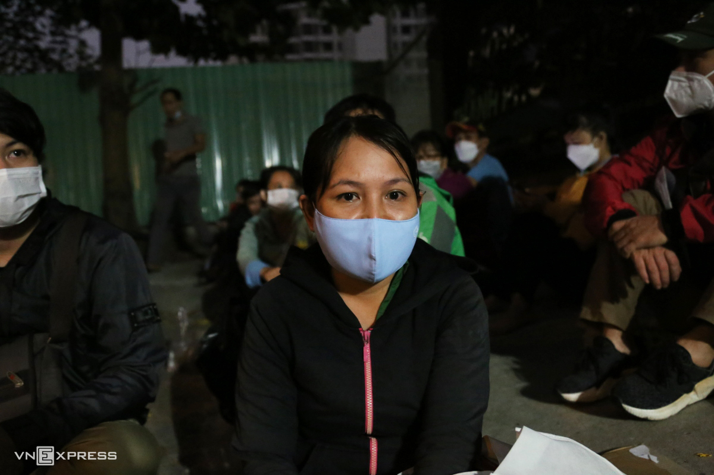
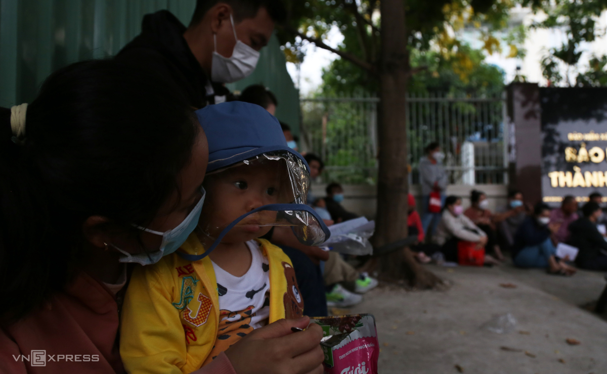
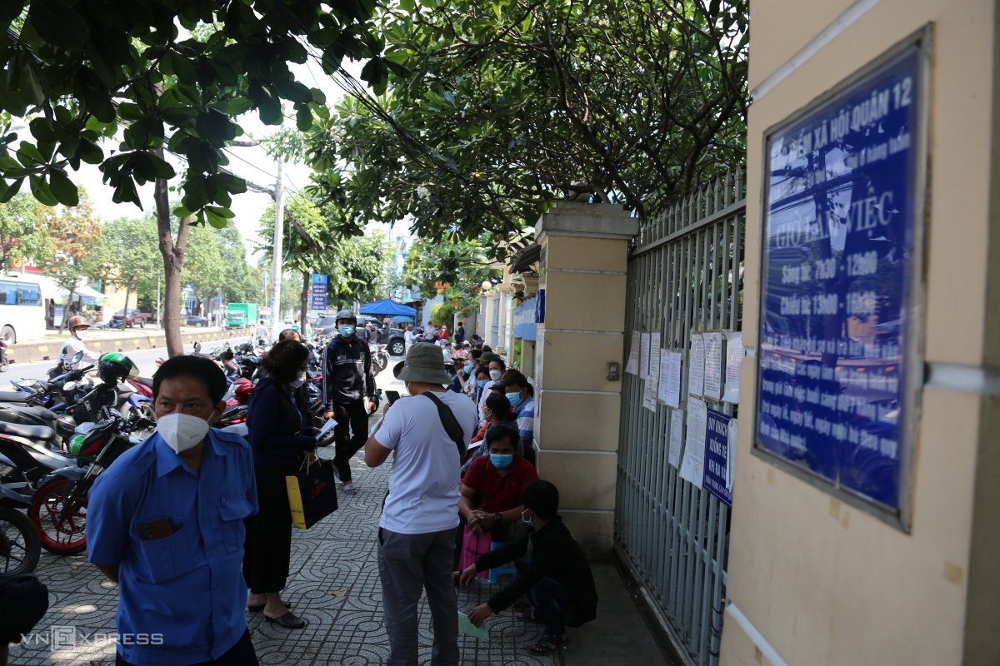
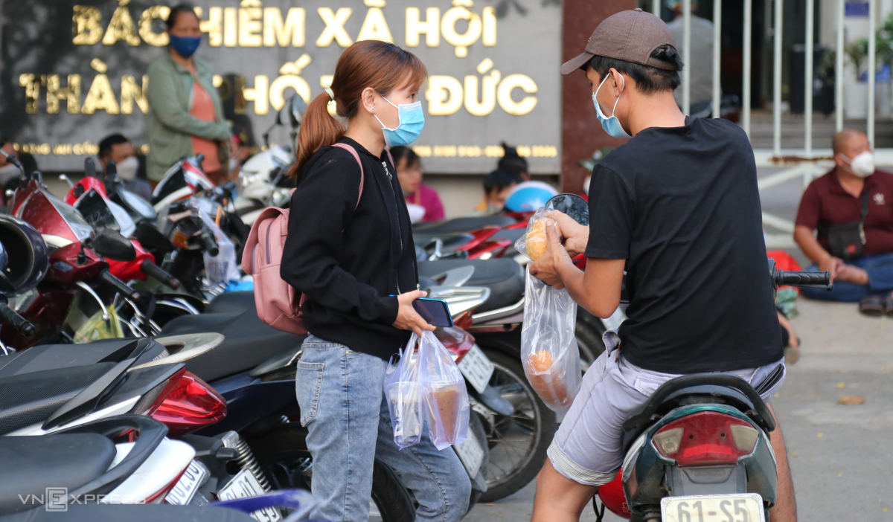

Thứ bảy, 9/4/2022, 05:00 (GMT+7)
Xếp hàng từ rạng sáng rút bảo hiểm xã hội một lần
TP HCM - Hàng trăm người xếp hàng từ 4h để chờ tới giờ làm thủ tục rút bảo hiểm xã hội một lần do nhiều cơ sở tại thành phố quá tải.

Từ 4h ngày 8/4, hơn 50 người đã xếp hàng trước cổng Bảo hiểm xã hội TP Thủ Đức, 400 Đồng Văn Cống, phường Thạnh Mỹ Lợi, để chờ tới 7h30 làm thủ tục rút bảo hiểm một lần.
Theo ông Phan Văn Mến, Giám đốc Bảo hiểm xã hội TP HCM, ba tháng đầu năm 2022 toàn thành phố có hơn 37.000 người nộp hồ sơ nhận trợ cấp một lần, tăng khoảng 19% so với cùng kỳ năm 2021.
Từ đầu tháng 4, các đơn vị như Bảo hiểm xã hội ở TP Thủ Đức, quận 12, Bình Tân, huyện Hóc Môn, Củ Chi, Bình Chánh xảy ra tình trạng quá tải vì nhu cầu nhận trợ cấp một tăng đột biến.
Do đó, người lao động phải đi từ sớm để được làm thủ tục.
Trước trụ sở Bảo hiểm xã hội TP Thủ Đức, nhiều người dùng điện thoại rọi đèn cho nhau để điền hồ sơ giữa trời tối.
Chị Nguyễn Thị Phương, 40 tuổi, đi từ nhà trọ ở phường Long Bình lúc 3h15, là người xếp hàng đầu tiên. "Tôi thấy nhiều đồng nghiệp đến lúc 6h nhưng không được bốc số nên đã đi sớm hơn 3 tiếng rưỡi", chị nói.
Do không có người trông coi, chị Lành, 27 tuổi, phải bế theo con trai đi làm thủ tục từ 4h30.
Trong lúc chờ đợi, chị tranh thủ đút cháo ăn liền và nước cho con. Chị Lành nghỉ việc từ đợt dịch năm ngoái đến nay đã đủ một năm, đủ điều kiện nhận trợ cấp một lần.
"Tôi đóng bảo hiểm được 6 năm, giờ lĩnh gần 70 triệu đồng. Số tiền này để lo cho con chứ dịch kéo dài hai vợ chồng không có thu nhập", chị Lành nói.
Gần đến giờ nhận số thứ tự, hàng trăm người đã xếp hàng dài gần 100 m trước trụ sở Bảo hiểm xã hội TP Thủ Đức. Nhiều người mệt mỏi vì chờ đợi hơn 3 giờ.
Tình trạng tương tự cũng xảy ra tại Bảo hiểm xã hội quận 12 trên đường Lê Thị Riêng, phường Thới An. Nhiều người đã đến từ 4h để xếp hàng vì lo ngại quá tải
Trong lúc xếp hàng, một số người nhờ người thân mua bánh mì, nước uống lót dạ.

7h30, nhiều người xếp hàng nhận số thứ tự từ nhân viên bảo hiểm. Sau đó, họ tiếp tục đợi vào khu vực tiếp nhận hồ sơ trực tiếp.
Mỗi ngày, cơ quan bảo hiểm xã hội từng quận huyện chỉ có thể tiếp nhận tối đa khoảng 200 hồ sơ trực tiếp, 300-500 hồ sơ qua bưu điện. Trong khi số lượng người xếp hàng chờ đợi lại gấp nhiều lần. Do đó, nhiều người phải bỏ về, chờ đến hôm sau.
Khu vực tiếp nhận hồ sơ có 10 quầy làm việc. Một nhân viên cho hay từ đầu tháng 4 đến nay phải làm việc liên tục gần 10 tiếng mỗi ngày để kịp giải quyết thủ tục cho người dân.
Để giảm áp lực cho những nơi quá tải, Bảo hiểm xã hội TP HCM đang xây dựng quy trình tiếp nhận, mở lại kênh bưu điện, giao nhận hồ sơ tại nhà để người dân không phải đi lại nhiều.
Anh Tăng Tiến Lê, 40 tuổi, buồn bã dắt xe ra về vì hồ sơ không đạt yêu cầu. Anh cho biết, trước đó đã tới trụ sở bảo hiểm tại nơi tạm trú ở TP Dĩ An thì được hướng dẫn đến đây. Tuy nhiên sáng 8/4 nhân viên lại yêu cầu anh bổ sung giấy tờ của công ty cũ ở quận Tân Phú.
Bảo hiểm xã hội TP HCM nêu một số thiệt thòi của người dân khi nhận trợ cấp một lần: số tiền nhận ít hơn số đã đóng; về già không có lương hưu, phải sống phụ thuộc người thân; mất cơ hội được cấp thẻ bảo hiểm y tế miễn phí... Về lâu dài cơ quan này tập trung tuyên truyền để người lao động tiếp tục tích lũy số năm đóng, về già có lương hưu.
Đình Văn